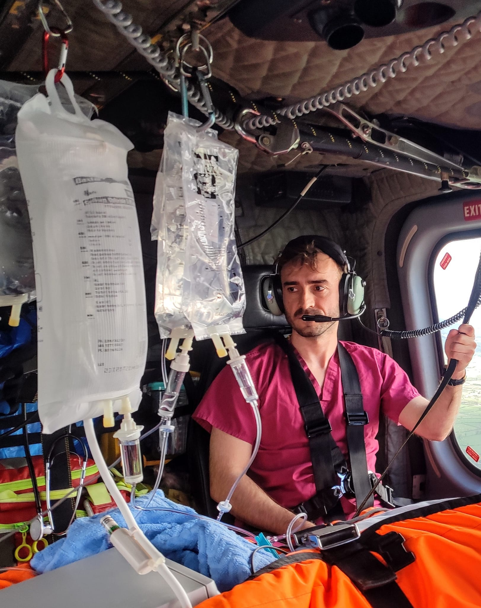
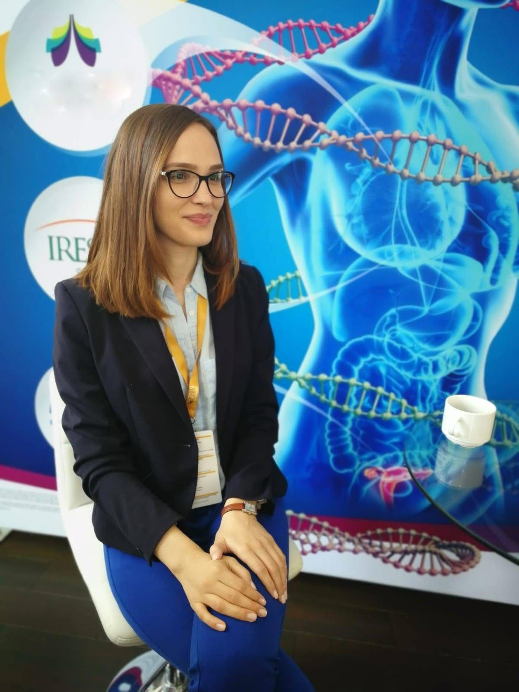

Grijă fără compromisuri. Acasă.
Îngrijiri medicale la domiciliu, de la intervenții punctuale, la monitorizare, tratament și suport intensiv continuu.
Suntem aici pentru pacienții cu patologie cronică, fragili sau dependenți, care au nevoie de sprijin în călătoria lor cu boala.
Misiunea noastră
Îngrijire 1:1, construită în jurul nevoilor pacientului. La domiciliu.
Când pacienții cu boli cronice avansate, fragili sau aflați în îngrijire paliativă încep să-și piardă autonomia, întreaga familie ajunge în punctul în care timpul, energia și liniștea se consumă în săli de așteptare, drumuri spre spital și teama că următoarea decompensare va fi mai dificil de tolerat decât precedenta. Acutizările sunt imprevizibile, iar îngrijorarea constantă că oricând, o zi obișnuită se poate transforma într-o așteptare interminabilă în sălile de așteptare cauzează uzură psihică și fizică.
Până de curând, pentru multe familii, singurele soluții viabile păreau să fie internările repetate în spital sau instituționalizarea în centre rezidențiale ori paliative, însă această alegere poate veni cu un cost greu de măsurat: mai puțin timp petrecut acasă, risc crescut de infecții asociate îngrijirii medicale, dezorientare, anxietate de separare și sentimentul de abandon.
Nobilis Medica, prin serviciile punctuale de monitorizare, investigații și tratament, precum și prin pachetele de suport medical continuu și intensiv, sprijină acești pacienți la domiciliu, pentru ca momentul instituționalizării să fie întârziat cât mai mult sau complet evitat, atunci când acest lucru este posibil și sigur din punct de vedere medical.
Suntem medici specialiști în Terapie Intensivă și Oncologie Medicală, două specialități care ne-au învățat ce înseamnă rigoarea, protocoalele stricte și empatia.
Împreună cu asistenții noștri cu zeci de ani de experiență, ne-am stabilit un singur obiectiv: livrarea unui act medical ireproșabil, ca tu să fii bine. Acasă.
Prezentare generală
Nobilis Medica a apărut ca urmare a unei nevoi pe care noi o considerăm fundamentală: siguranța.
Astfel, ne-am propus ca toți pacienții, indiferent de patologie sau gradul de fragilitate, să primească îngrijiri medicale de înaltă calitate acolo unde se simt cel mai bine protejați — acasă. Abordarea noastră unește deciziile ferme fundamentate științific cu prezența umană și profesionalismul cu responsabilitatea reală față de fiecare persoană în parte.
Redefinim standardul îngrijirii la domiciliu printr-un act medical construit pe competență, continuitate și atenție reală la detalii, cu scopul de a oferi pacienților liniște, predictibilitate și siguranță pe toate planurile: fizică, emoțională, medicală.

Medic specialist ATI
Dr. Deac Ciprian
Experiență clinică și arii de interes
- Managementul anestezic electiv și de urgență din chirurgia generală, neurochirurgie și chirurgia cardiovasculară.
- Managementul pacienților critici din Terapia Intensivă în context postoperator, cu intoxicații acute, politraumatizați sau mari arși.
- Experiență limitată în transferul aerian și terestru al pacientului critic.
- Absolvent al Examenului European de Anestezie, EDA/ESAIC, partea I.
- 5 ani de activitate editorială la Editura ALL.
- Asociat în dezvoltarea unei aplicații dedicate interpretării simptomelor și datelor paraclinice de către utilizator.
Experiență clinică
- Spitalul Clinic Județean de Urgență Cluj-Napoca
- St. James's University Hospital, Dublin
- University Hospital Kerry, Tralee

Medic specialist oncolog
Dr. Rohozneanu Emanuela
Experiență clinică și arii de interes
- Cunoștințe solide în integrarea terapiilor oncologice moderne, inclusiv chimioterapie, hormonoterapie, terapii țintite și imunoterapie, în funcție de profilul biologic al bolii și de particularitățile fiecărui pacient.
- Interes profesional deosebit față de cancerul de sân, cu preocupare constantă pentru stadializarea completă, alegerea tratamentului sistemic adecvat și urmărirea răspunsului terapeutic.
- Doctorandă cu activitate de cercetare dedicată cancerului testicular, orientată către o mai bună înțelegere a factorilor prognostici, a răspunsului la tratament și a evoluției pe termen lung.
- Abordare medicală riguroasă, empatică și atent individualizată, cu accent pe comunicare clară și sprijinirea pacientului în toate etapele bolii.
- Adeptă a practicilor oncologice moderne, bazate pe dovezi științifice, colaborare multidisciplinară și respect pentru nevoile medicale și umane ale pacientului.
Experiență clinică
- Institutul Oncologic "Prof. Dr. Ion Chiricuță", Cluj-Napoca
Asistent medical generalist
As. Boloș Lidia
Experiență clinică și arii de interes
- 30 de ani de experiență în medicină internă, cu activitate clinică dedicată îngrijirii pacienților cu patologie complexă și multiple comorbidități.
- Experiență extinsă în monitorizarea pacienților cu afecțiuni cardiovasculare, respiratorii, hepatice, metabolice și renale, inclusiv pacienți fragili, instabili sau cu risc crescut de decompensare.
- Competențe solide în supravegherea parametrilor vitali, administrarea tratamentelor, recoltarea probelor biologice, urmărirea evoluției clinice și recunoașterea precoce a semnelor de agravare.
- Practică profesională orientată către siguranța pacientului, continuitatea îngrijirii și colaborarea eficientă cu medicii și echipa multidisciplinară.
- Experiență relevantă în îngrijirea zilnică a pacienților vulnerabili, unde rigoarea, atenția clinică, promptitudinea și responsabilitatea profesională sunt esențiale pentru stabilitatea pacientului.
Experiență clinică
- Spitalul Clinic Județean de Urgență Cluj-Napoca
Intervenții punctuale
Ne dorim să ușurăm și să grăbim procesul de vindecare al pacienților noștri prin evitarea cozilor, timpului pierdut în sălile de așteptare sau în trafic.
Îngrijirea plăgilor chirurgicale, administrarea tratamentului intravenos, prelevarea de probe biologice și transportul la laborator sau îngrijirea colostomei sunt doar câteva din serviciile noastre. Vezi mai jos întreaga listă de servicii și spune-ne cum te putem ajuta.
Alege rapid categoria
Îți suntem alături în orice moment. Spune-ne ce nevoi ai și venim noi la tine!
- Evaluarea și monitorizarea parametrilor respiratori: examen obiectiv cu auscultație, inspecție, palpare, pulsoximetrie390 lei
- Explorarea gazelor sangvine arteriale: oxigen și dioxid de carbon, prin ASTRUP290 lei
- Aspirare și toaletă nazo-oro-faringiană cu glicerină290 lei
- Toaletarea și aspirarea traheostomiei390 lei
- Schimbarea canulei de traheostomă800 lei
- Optimizarea parametrilor de CPAP sau BiPAP390 lei
- Prelevare spută, exudat faringian sau aspirat traheobronșic și transport la laborator pentru culturi470 lei
- Evaluarea parametrilor hemodinamici: puls, tensiune arterială, EKG, perfuzie periferică, timp de reumplere capilară390 lei
- EKG în 12 derivații cu interpretare pe loc650 lei
- Dozare biomarkeri cardiaci cu analizor, cu obținerea rezultatelor pe loc650 lei
- Clismă390 lei
- Microclismă190 lei
- Extragere fecalom590 lei
- Tușeu rectal în scop diagnostic300 lei
- Diagnosticarea sângerării oculte în materiile fecale prin test rapid390 lei
- Dozarea toxinelor A și B specifice Clostridium difficile din materiile fecale, cu deplasare, recoltare și transport la laborator550 lei
- Testare antigen Helicobacter pylori din materiile fecale, cu deplasare, recoltare și transport la laborator540 lei
- Montare sondă nazo-gastrică320 lei
- Lavaj sondă nazo-gastrică250 lei
- Toaletare prin tehnici aseptice și schimbarea pungii de colostomă290 lei
- Verificarea permeabilității colostomei140 lei
- Prelevare materii fecale pentru coprocultură și antibiogramă, cu deplasare, recoltare și transport la laborator560 lei
- Prelevare materii fecale pentru examen coproparazitologic, cu deplasare, recoltare și transport la laborator520 lei
- Evaluarea statusului volemic prin măsurarea diametrului și indicelui de colapsabilitate a venei cave inferioare1.000 lei
- Montarea și monitorizarea diurezei orare650 lei
- Evaluarea macroscopică a urinii200 lei
- Sondaj vezical bărbat390 lei
- Sondaj vezical femei360 lei
- Suprimarea sondei urinare180 lei
- Lavajul vezicii urinare350 lei
- Schimbare pungă urinară90 lei
- Managementul retenției urinare: ecografie, montare sondă, monitorizare diureză1.000 lei
- Analiză sumar + sediment urinar320 lei
- Măsurarea presiunii intra-abdominale prin intermediul sondei vezicale390 lei
- Prelevare urină pentru urocultură și transport la laborator490 lei
- Explorarea electroliților: Na, Ca, K, prin analiză ASTRUP și interpretare290 lei
- Explorarea nivelului hemoglobinei prin analiză ASTRUP și interpretare290 lei
- Interpretarea analizelor de sânge200 lei
- Perfuzie cu albumină 20%540 lei
- Igienă orală și corporală250 lei
- Toaletarea și pansarea plăgilor chirurgicale360 lei
- Spălătură auriculară550 lei
- Extragerea firelor de sutură sau a capselor350 lei
- Extragerea broșelor Kirschner390 lei
- Prelevare colecții purulente sau secreții din plăgi și transport la laborator470 lei
- Injecții intravenoase200 lei
- Injecții intramusculare, subcutanate150 lei
- Perfuzie cu albumină 20%540 lei
- Prelevare sânge în condiții sterile pentru hemoculturi750 lei
- Prelevare urină pentru urocultură și transport la laborator490 lei
- Prelevare spută, exudat faringian sau aspirat traheobronșic și transport la laborator pentru culturi470 lei
- Prelevare materii fecale pentru coprocultură și antibiogramă, cu deplasare, recoltare și transport la laborator560 lei
- Prelevare materii fecale pentru examen coproparazitologic, cu deplasare, recoltare și transport la laborator520 lei
- Prelevare colecții purulente sau secreții din plăgi și transport la laborator470 lei
- Interpretarea analizelor de sânge200 lei
- Diagnosticarea sângerării oculte în materiile fecale prin test rapid390 lei
- Testare antigen Helicobacter pylori din materiile fecale, cu deplasare, recoltare și transport la laborator540 lei
- Dozarea toxinelor A și B specifice Clostridium difficile din materiile fecale, cu deplasare, recoltare și transport la laborator550 lei
- Explorarea gazelor sangvine, electroliților și hemoglobinei prin ASTRUP390 lei
Tratamentul escarelor: evaluare, plan concret, monitorizare evolutivă.
Serviciile de tratament oferite de Nobilis Medica se adresează pacienților la care escara nu este o problemă locală izolată, ci parte dintr-un context medical complex: imobilizare, fragilitate, diabet, cancer, insuficiență cardiacă, malnutriție, durere, risc infecțios sau paliație. În aceste situații, pansamentul este doar o componentă; tratamentul corect presupune evaluare medicală, controlul presiunii, nutriție, hidratare, controlul durerii, prevenția infecției și monitorizare evolutivă.
Stadializare, măsurarea profunzimii, evaluarea durerii, semnelor de infecție locală și a riscului de progresie.
Recomandarea tipului de pansament, stabilirea frecvenței pansamentelor, plan de offloading și poziționare, recomandări pentru familie sau îngrijitor, semne de alarmă și criterii de escaladare către chirurgie/spital.
Toaletarea leziunilor, pansamente antimicrobiene cu argint, montare kit vacuum (presiune negativă), identificarea semnelor de alarmă și escaladare către spital.
Evaluare medicală inițială escară + plan scris
Prima etapă stabilește severitatea, riscul de progresie și planul de pansamente, poziționare și escaladare.
790 lei
- stadializarea escarei
- măsurarea dimensiunilor
- fotografiere pentru monitorizare evolutivă
- evaluarea profunzimii
- evaluarea cantității și tipului de exsudat
- evaluarea necrozei, fibrinei și țesutului de granulație
- evaluarea durerii
- evaluarea semnelor de infecție locală sau sistemică
- evaluarea statusului nutrițional și al hidratării
- evaluarea mobilității și a riscului de progresie
- recomandarea tipului de pansament
- stabilirea frecvenței pansamentelor
- plan de offloading și poziționare
- recomandări pentru familie sau îngrijitor
- semne de alarmă și criterii de escaladare către chirurgie/spital
Escara de gradul 1 este o leziune incipientă, cu piele intactă, eritem persistent, sensibilitate locală, durere sau disconfort la presiune. Nu există plagă deschisă, necroză sau exsudat. Tratamentul principal este reducerea presiunii și prevenirea progresiei.
Tratament simplu
- evaluarea zonei afectate
- protecția tegumentului prin aplicarea de cremă/barieră cutanată
- film protector, dacă este necesar
- offloading
- repoziționare
- recomandare de saltea antiescară/perne de poziționare
- instruirea familiei
- monitorizare evolutivă
- 1-2 escare grad 1180-300 lei/vizită
- Mai mult de 3 escare grad 1350-500 lei/vizită
Escara de gradul 2 este o leziune superficială, cu pierdere parțială de derm. Poate arăta ca o abraziune, flictenă ruptă sau plagă superficială. Poate avea exsudat redus sau moderat, dar nu există necroză profundă sau afectare a țesutului subcutanat.
Tratament simplu
- curățarea locală a plăgii
- protecția tegumentului din jur
- pansament hidrocoloid, siliconat sau spumă poliuretanică
- controlul umidității și prevenirea macerării
- offloading
- monitorizare
- instruirea familiei
- 1-2 escare grad 2220-350 lei/vizită
- Peste 3 escare grad 2450-600 lei/vizită
Tratament cu argint
Se indică doar dacă există semne de încărcătură bacteriană crescută, miros, exsudat crescut, stagnarea vindecării, risc infecțios sau pacient fragil, diabetic, oncologic, imunodeprimat sau paliativ.
- curățare locală
- pansament antimicrobian cu argint
- pansament secundar absorbant, dacă este necesar
- protecția tegumentului perilezional
- monitorizarea mirosului și exsudatului
- reevaluarea indicației după câteva aplicări
- 1-2 escare grad 2 cu argint350-550 lei/vizită
- Mai mult de 3 escare grad 2 cu argint700-1.000 lei/vizită
Escara de gradul 3 este o plagă profundă, cu pierdere completă de grosime a pielii și afectarea țesutului subcutanat. Pot exista fibrină, exsudat moderat sau abundent, miros, colonizare bacteriană, margini macerate și vindecare lentă. Nu este expus osul, tendonul sau mușchiul.
Tratament simplu / pansament avansat fără argint
- curățare locală
- pansament absorbant
- alginat sau hidrofibră, dacă există exsudat
- spumă poliuretanică
- protecția tegumentului perilezional
- posibilă debridare conservatoare
- controlul durerii
- offloading strict
- monitorizare foto
- reevaluare medicală periodică
- 1-2 escare grad 3390-650 lei/vizită
- Mai mult de 3 escare grad 3750-1.000 lei/vizită
Tratament cu argint
Se indică dacă există exsudat crescut, miros, stagnarea vindecării, colonizare critică, risc infecțios sau semne locale de infecție.
- curățare locală
- pansament antimicrobian cu argint
- pansament absorbant secundar
- protecția marginilor plăgii
- controlul exsudatului
- controlul durerii
- reevaluare medicală
- monitorizare evolutivă
- 1-2 escare grad 3 cu argint500-800 lei/vizită
- Mai mult de 3 escare grad 3 cu argint1.000-1.300 lei/vizită
Tratament cu presiune negativă / NPWT
Poate fi indicat în escarele de grad 3 profunde, cavitare, exsudative, cu evoluție lentă, mai ales după debridare adecvată.
- evaluare medicală pentru indicație NPWT
- pregătirea plăgii
- aplicarea sistemului de presiune negativă
- verificarea etanșeității
- controlul exsudatului
- stimularea granulației
- instruirea familiei
- schimbarea periodică a pansamentului NPWT
- Evaluare indicație NPWT790 lei
- Montare inițială NPWT pentru 1-2 escare grad 31.200-1.800 lei
- Schimbare pansament NPWT pentru 1-2 escare grad 3600-1.000 lei/vizită
- Montare/schimbare NPWT pentru mai mult de 3 escare grad 3de la 1.200 lei/vizită
Tariful depinde de suprafață, localizare și consumabile. Aparatul, kiturile, canistrele și consumabilele NPWT se facturează separat.
Escara de gradul 4 este o plagă profundă, cu distrucție tisulară severă. Poate exista expunere de os, tendon sau mușchi, necroză, exsudat abundent, miros, tunelizare, cavități, risc de osteomielită, celulită sau sepsis. Necesită management medical complex și, uneori, evaluare chirurgicală.
Tratament simplu / pansament complex fără argint
- evaluare medicală
- curățare locală
- pansamente absorbante
- alginat sau hidrofibră
- spumă poliuretanică
- protecția tegumentului perilezional
- posibilă debridare conservatoare
- controlul durerii
- controlul exsudatului
- offloading strict
- monitorizare foto
- reevaluare medicală frecventă
- recomandare chirurgicală/spitalicească dacă apar semne de infecție severă sau necroză extensivă
- 1-2 escare grad 4650-900 lei/vizită
- Mai mult de 3 escare grad 41.000-1.500 lei/vizită
Tratament cu argint
Se indică frecvent în escarele grad 4 cu exsudat, miros, colonizare critică, risc infecțios crescut sau semne locale de infecție.
- curățare locală
- pansament antimicrobian cu argint
- pansament absorbant secundar
- controlul exsudatului
- protecția tegumentului din jur
- controlul durerii
- reevaluare medicală frecventă
- monitorizare pentru semne de infecție sistemică
- coordonare cu serviciile de chirurgie generală / plastic dacă este necesar
- 1-2 escare grad 4 cu argint800-1.200 lei/vizită
- Mai mult de 3 escare grad 4 cu argint1.300-1.800 lei/vizită
Tratament cu presiune negativă / NPWT
Este indicat selectiv în escarele grad 4 profunde, cavitare, exsudative, după debridare, când se urmărește controlul exsudatului, reducerea frecvenței pansamentelor și stimularea granulației. Nu se aplică peste necroză neîndepărtată sau infecție necontrolată.
- evaluare medicală
- stabilirea indicației NPWT
- excluderea contraindicațiilor
- pregătirea plăgii
- aplicarea sistemului NPWT
- adaptarea pansamentului la cavitate
- verificarea etanșeității
- controlul durerii
- monitorizare
- schimbarea periodică a pansamentului
- coordonare chirurgicală, dacă este necesară debridare extinsă
- Evaluare indicație NPWT790 lei
- Montare inițială NPWT pentru 1-2 escare grad 41.500-1.800 lei
- Schimbare pansament NPWT pentru 1-2 escare grad 4900-1.200 lei/vizită
- Montare/schimbare NPWT pentru mai mult de 3 escare grad 4de la 1.200-1.500 lei/vizită
Tariful depinde de complexitate, suprafață, cavități și consumabile. Aparatul, kiturile, canistrele și consumabilele NPWT se facturează separat.
Terapii intravenoase de suport metabolic și regenerativ
Protocoale IV grupate după obiectivul clinic, ca pacientul să înțeleagă rapid ce i se potrivește.
Terapiile IV de suport metabolic și regenerativ sunt parte din programul terapeutic individual. Ele nu înlocuiesc tratamentul bolii de bază, ci îl completează atunci când există indicație medicală, fiind integrate în planul de îngrijire după evaluarea pacientului și în funcție de diagnostic, analize, gradul de fragilitate, statusul nutrițional, simptome și obiectivele terapeutice.
Aceste terapii susțin metabolic pacientul, corectează deficitele, reduc povara simptomatică și sprijină recuperarea.
Ce include tariful
Nu este doar costul medicamentelor.
- anamneză și examen obiectiv
- evaluarea medicală a indicației
- verificarea contraindicațiilor
- alegerea schemei perfuzabile și adaptarea protocolului la istoricul pacientului
- consumabile: soluții antiseptice, branulă, trusă perfuzie, medicamente, pansamente, soluții perfuzabile, creme, coloizi
- montarea abordului venos
- administrarea tratamentului
- monitorizarea parametrilor înainte, în timpul și după administrare
- supravegherea reacțiilor adverse
- intervenția medicală în caz de intoleranță
- deplasare și logistică medicală
- documentarea actului medical și eliminarea deșeurilor medicale
- plan de tratament, recomandări post-tratament și rețetă
Suport cognitiv avansat
NeuroSpark
460 leiProtocol de suport cognitiv și metabolic neuronal.
Potrivit pentru fatigabilitate mentală, scăderea concentrării, suprasolicitare sau deficit cognitiv ușor.
- susține concentrarea și atenția în perioade de suprasolicitare cognitivă
- optimizează suportul metabolic neuronal prin cofactori vitaminici injectabili
- susține microcirculația cerebrală în surmenaj sau randament intelectual scăzut
- reduce senzația de „ceață mentală” asociată epuizării, stresului sau recuperării după boală
- oferă suport funcțional pentru deficit cognitiv ușor
Schema exactă se stabilește individual.
NeuroGenesis
620 leiProtocol avansat de suport neurotrofic, antioxidant și metabolic cerebral.
Potrivit pentru fragilitate neurologică, deficit cognitiv, recuperare lentă, bradipsihie sau nevoie de suport neuro-metabolic mai intens.
- suport neurotrofic avansat pentru recuperare cognitivă lentă sau fragilitate neurologică
- susține neuroplasticitatea și adaptarea funcțională cerebrală
- oferă protecție metabolică neuronală în stres oxidativ crescut
- asociază suport neurotrofic, antioxidant și microcirculator
- optimizează recuperarea neurologică după boală, suprasolicitare sau declin funcțional
Neuroprotecție în afecțiuni degenerative
NeuroProtect
600 leiProtocol de suport neurologic pentru declin funcțional, tulburări cognitive progresive sau risc neurodegenerativ.
- suport antioxidant și neuro-metabolic în declin cognitiv progresiv
- susține funcția mitocondrială neuronală
- aduce vitamine neurotrofice pentru sistemul nervos central și periferic
- reduce vulnerabilitatea celulară la stres oxidativ și inflamație metabolică cronică
- ajută menținerea statusului funcțional neurologic în planul de monitorizare
NeuroRegenerate
680 leiProtocol neurologic avansat, orientat spre suport neurotrofic, metabolic și antioxidant.
- suport neurotrofic complex în afectare neurologică progresivă sau recuperare dificilă
- susține mecanismele de adaptare neuroplastică
- oferă protecție mitocondrială și antioxidantă
- susține metabolismul neuronal și integritatea funcțională a tracturilor nervoase
- abordare adjuvantă pentru patologie neurodegenerativă sau deficit funcțional persistent
NeuroMax Gerovital H3
1.200 lei / 10 cureProtocol administrat etapizat, integrat într-un plan medical personalizat.
- suport funcțional pentru prevenirea fenomenelor degenerative cauzate de vârstă
- susține regenerarea celulară și toleranța la stres
- optimizează tonusul general
- include evaluarea indicației, testare subcutanată, monitorizarea toleranței și administrare în cură
Testare subcutanată: 150 lei.
Recuperare neurologică după AVC
Cerebral Recovery
540 leiSuport pentru recuperare neurologică post-AVC, ca adjuvant al tratamentului neurologic și al recuperării medicale.
- suport microcirculator cerebral în recuperarea post-AVC
- susține metabolismul neuronal în zone vulnerabile
- reduce impactul stresului oxidativ post-ischemic
- optimizează toleranța la kinetoterapie și recuperare neurologică
- completează tratamentul neurologic de fond
Cerebral Regulation
630 leiProtocol avansat post-AVC, cu orientare neurotrofică, vasculară și antioxidantă.
- abordare integrată neurotrofică, vasculară și antioxidantă
- susține neuroplasticitatea și reorganizarea funcțională cerebrală
- susține microcirculația și perfuzia cerebrală în contexte ischemice stabilizate
- optimizează metabolismul energetic neuronal
- adjuvant pentru recuperare lentă, deficit neurologic persistent sau fatigabilitate post-AVC
Suport cardiometabolic
CardioBalance
560 leiProtocol de suport cardiovascular și electrolitic pentru fatigabilitate, deficit metabolic, dezechilibre minerale ușoare sau suport funcțional cardiovascular.
- corectează deficitul electrolitic și susține metabolismul
- susține excitabilitatea neuromusculară și toleranța la efort
- aduce cofactori implicați în metabolismul energetic cardiac
- sprijină pacienții cu astenie, crampe, suprasolicitare sau recuperare după boală
CardioSupport
620 leiProtocol cardiovascular avansat cu suport antioxidant, metabolic și electrolitic.
- suport metabolic avansat la pacienți cu polifarmacie cardiologică sau rezervă funcțională redusă
- susține funcția mitocondrială cardiacă și producția celulară de energie
- oferă protecție antioxidantă în stres vascular și metabolic crescut
- susține funcția cardiacă și neuromusculară prin aport mineral și vitaminic
- optimizează statusul funcțional general în patologie cardiologică stabilă
Suport vascular în ischemii periferice
VascuProtect
520 leiProtocol vascular periferic orientat spre microcirculație și protecție antioxidantă.
- susține microcirculația periferică în ischemie cronică stabilă sau tulburări vasculare periferice
- susține oxigenarea tisulară și metabolismul local în zone cu perfuzie deficitară
- reduce stresul oxidativ asociat disfuncției endoteliale
- suport adjuvant în extremități reci, claudicație sau recuperare tisulară lentă
VascuMax
540 leiProtocol vascular avansat pentru microcirculație și metabolism tisular.
- suport vascular periferic avansat pentru perfuzie tisulară și metabolism celular
- optimizează fluxul microvascular în contexte ischemice cronice stabilizate
- susține funcția endotelială prin componente antioxidante și metabolice
- sprijină recuperarea țesuturilor cu aport circulator precar
- adjuvant în boală vasculară periferică, diabet sau fragilitate vasculară
Stress, burnout și fatigabilitate
EnergyBoost
580 leiProtocol de suport metabolic și neuromuscular pentru oboseală cronică, surmenaj fizic sau intelectual, stres prelungit ori recuperare după epuizare.
- reface rezervele funcționale în oboseală, suprasolicitare sau epuizare
- susține funcția neuromusculară
- aduce vitamine, minerale și cofactori pentru metabolism energetic
- corectează dezechilibre funcționale care pot întreține fatigabilitatea
EnergyRecharge
690 leiProtocol metabolic avansat pentru fatigabilitate intensă, burnout, recuperare lentă sau solicitare fizică/psihică prelungită.
- suport metabolic avansat
- susține funcția mitocondrială și producția celulară de energie
- protecție antioxidantă în stres fiziologic prelungit
- reface statusul vitaminic, mineral și metabolic prin formulă perfuzabilă complexă
- optimizează tonusul general
Suport pentru sistemul nervos periferic
NeuroSupport
520 leiProtocol pentru neuropatii periferice, parestezii, dureri neuropate sau deficit neurotrofic, după evaluare medicală.
- suport neurotrofic pentru parestezii, amorțeli, durere neuropată sau deficit carențial
- susține metabolismul axonal și conducerea nervoasă periferică
- aduce vitamine implicate în funcționarea sistemului nervos periferic
- suport microcirculator în neuropatii asociate diabetului, ischemiei sau fragilității vasculare
- completează tratamentul de fond prin prescripție orală, dacă există indicație
MyelinRepair
690 leiProtocol avansat neurotrofic și antioxidant pentru neuropatii periferice persistente sau complexe.
- suport neurotrofic avansat în neuropatii persistente, dureroase sau complexe
- susține metabolismul mielinei și integritatea funcțională a nervului periferic
- reduce stresul oxidativ din neuropatii diabetice, toxice, carențiale sau post-chimioterapie
- asociază suport neurotrofic cu protecție metabolică și antioxidantă
- adjuvant în simptome neuropate recurente, recuperare lentă sau afectare mixtă
ImmunoDefense
570 leiProtocol de suport imunitar, antioxidant și micronutrițional.
- reface statusul micronutrițional implicat în funcția imună
- suport antioxidant în fragilitate, convalescență sau infecții recente
- aduce oligoelemente relevante pentru răspunsul imun și echilibrul metabolic
- susține recuperarea după episoade infecțioase sau inflamatorii
- adaptat asteniei post-infecțioase, alimentației deficitare sau riscului de carențe
ColdThru
580 leiProtocol de suport simptomatic în răceli, viroze sau sindroame inflamatorii ușoare, după evaluare medicală.
- control simptomatic al febrei, durerilor musculare și disconfortului inflamator
- suport pentru fluidificarea secrețiilor și confort respirator
- hidratare și suport metabolic în perioada acută
- protecție gastrică în contextul antiinflamatoarelor, dacă este indicată
- monitorizează dispneea, saturația scăzută, febra persistentă sau alterarea stării generale
Nu înlocuiește evaluarea medicală în caz de agravare.
HepatoProtect
720 leiProtocol de susținere a funcțiilor ficatului cu rol antioxidant și suport metabolic.
Pachet 3 cure: 1.720 lei.
- suport pentru metabolism hepatic în suprasolicitare metabolică, steatoză, convalescență sau fragilitate hepatică
- susține procesele hepatice de metabolizare și eliminare a produșilor azotați
- protecție antioxidantă în stres hepatic crescut
- aport de cofactori vitaminici și minerali implicați în funcția hepatocelulară
- recomandat pe baza analizelor recente: AST, ALT, GGT, bilirubină, fosfatază alcalină, albumină și status metabolic
Suport bronho-pulmonar
350-550 leiInclude auscultație, monitorizare, încurajarea tusei și tapotaj, cu protocol ales după evaluare.
- Aerosoli cu NaCl 0.9% + vitamina C IV: 350 lei, pentru confort respirator și fluidificarea secrețiilor
- Aerosoli cu N-ACC + vitamina C IV + MgSO4 IV: 450 lei, pentru secreții vâscoase, tuse ineficientă sau congestie
- Aerosoli cu Ventolin + vitamina C IV + MgSO4 IV + Dexametazonă IV: 550 lei, bronhodilatator și antiinflamator, doar sub supraveghere medicală
Controlul grețurilor și vărsăturilor: Heavy
560 leiProtocol pentru grețuri și vărsături persistente, intoleranță alimentară sau greață post-chimioterapie.
- control antiemetic multimodal
- reduce riscul de deshidratare și dezechilibre funcționale
- protecție gastrică în iritație digestivă, tratamente oncologice sau intoleranță alimentară
- suport vitaminic și metabolic la aport oral redus
- evaluează cauze de alarmă: durere abdominală intensă, febră, hematemeză, deshidratare severă sau pacient oncologic fragil
Tratament antispastic
450 leiProtocol pentru dureri cu componentă spastică, colici sau contractură musculară, după evaluare.
- reduce durerea cu mecanism spastic sau colicativ
- reduce hipertonia musculară și spasmele dureroase
- controlează componenta inflamatorie asociată
- ameliorează disconfortul funcțional și contractura
- evaluează semnele de alarmă în colici sau dureri severe
Analgezie
Light
380 leiDureri ușoare-moderate, fără criterii de severitate.
- controlul durerii și al disconfortului inflamator
- relaxare musculară ușoară, dacă există componentă contracturală
- administrare rapidă cu monitorizarea toleranței
- potrivit pentru dureri de cap, dentare sau traumatisme minore
Medium
440 leiDureri moderate, musculo-scheletale, inflamatorii sau cu componentă spastică.
- analgezie multimodală adaptată mecanismului durerii
- îmbunătățește statusul funcțional, somnul și concentrarea
- protecție gastrică atunci când se folosesc antiinflamatoare
- monitorizează eficiența și toleranța digestivă, renală și cardiovasculară
Heavy
550 leiDureri intense, cu necesar de combinație analgezică și monitorizare mai atentă.
- obține analgezie eficientă până la un nivel suportabil
- reduce răspunsul neurovegetativ: anxietate, tahicardie, hipertensiune, agitație sau insomnie
- restabilește respirația, mobilizarea, alimentația, hidratarea și igiena
- previne complicațiile durerii intense și imobilizării
- monitorizează reacțiile adverse și necesarul de escaladare
Dureri oncologice sau severe
900 leiProtocol pentru pacient oncologic cu durere severă, cu evaluare medicală și consult oncologic inclus.
- control rapid al durerii severe și al puseelor paroxistice
- menține confortul și calitatea vieții
- previne deteriorarea secundară durerii: imobilizare, insomnie, inapetență, anxietate, delir sau dispnee agravată
- monitorizează sedarea excesivă, constipația, greața, confuzia, depresia respiratorie și interacțiunile medicamentoase
- monitorizează toleranța la opioide
Optimizare nutrițională și suport metabolic
NutriSupport
550 leiSuport nutrițional parenteral parțial pentru aport oral insuficient sau necesar metabolic crescut.
- aport parenteral parțial de aminoacizi
- corectează aportul caloric și proteic insuficient
- previne progresia către malnutriție, cașexie, sarcopenie sau declin funcțional
- susține toleranța la efort și capacitatea de recuperare
- optimizează micronutrienți relevanți: fier, folat, B12, D, zinc, magneziu
NutriPlus
640 leiProtocol nutrițional parenteral complex, cu suport energetic și lipidic suplimentar.
- recuperare nutrițională în boală oncologică, inflamație cronică, fragilitate, postoperator sau boli neurologice
- individualizează aportul energetic, proteic și metabolic
- combate pierderea masei musculare și sarcopenia
- reduce riscul de infecții, vindecare întârziată, escare și recuperare dificilă
- stabilește strategie nutrițională etapizată
Nutriție parenterală totală
780 leiProtocol complet/periferic, indicat doar după evaluare medicală.
- asigură necesarul caloric, proteic, lipidic, glucidic, hidroelectrolitic și de micronutrienți
- previne sau corectează malnutriția severă și catabolismul accelerat
- menține echilibrul metabolic și hidroelectrolitic
- reduce complicațiile asociate nutriției parenterale
- facilitează tranziția către nutriție enterală sau orală când este posibil
Suport hematologic în sindroame anemice
HematoSupport
580 leiProtocol de suport hematologic micronutrițional.
- identifică și corectează cauze ale anemiei: fier, B12/folat, inflamație, pierderi sau aport insuficient
- previne progresia către anemie moderată sau severă
- îmbunătățește toleranța la efort la pacienți fragili, oncologici sau cu comorbidități cardiovasculare
- reechilibrează rezervele hematinice
- monitorizează răspunsul terapeutic și aderența
HematoBoost
670 leiProtocol hematologic avansat, cu suport vitaminic, mineral și terapie marțială injectabilă, dacă este indicată.
- crește eficient și susținut hemoglobina
- corectează factorii cu rol în hematopoieză
- reduce impactul anemiei asupra funcției cardiace și tisulare
- optimizează statusul nutrițional și metabolic asociat eritropoiezei
- previne decompensarea și necesitatea intervențiilor urgente
HematoRestore
850 leiProtocol hematologic complex pentru cazuri cu indicație specifică de suport injectabil avansat.
- restabilește capacitatea de transport a oxigenului
- stabilizează pacientul simptomatic sau vulnerabil
- identifică și controlează cauza majoră
- alege strategia corectivă adecvată contextului clinic
- previne recurența și complicațiile post-corecție
În caz de sângerare masivă cu necesar de transfuzie se recomandă UPU sau 112, conform criteriilor clinice.
Integritate tegumentară și regenerare tisulară
Skin Regeneration
760 leiProtocol antioxidant și metabolic pentru suportul pielii, stres oxidativ și recuperare tisulară.
Pachet 4 ședințe: 2.600 lei.
- stimulează procesele fiziologice de reparare tisulară: granulație, angiogeneză, sinteză de colagen, epitelizare și remodelare
- îmbunătățește integritatea pielii și țesuturilor vulnerabile
- optimizează microcirculația, oxigenarea și aportul nutrițional local
- susține vindecarea leziunilor, ulcerelor, escarelor, plăgilor cronice sau postoperatorii
- reduce inflamația locală excesivă și stresul oxidativ
- previne suprainfecția, extinderea plăgii, necroza, durerea persistentă și întârzierea vindecării
Notă de informare
Protocoalele perfuzabile Nobilis Medica reprezintă scheme de tratament adaptate nevoilor pacienților, conțin medicamente eliberate exclusiv pe bază de prescripție medicală, nu suplimente alimentare sau formule standardizate, prin urmare nu pot fi administrate la cerere și în orice condiții. Fiecare protocol este stabilit individual de medic, în funcție de indicația clinică, diagnostic, simptomatologie, analize relevante, tratamentul cronic curent, interacțiuni, contraindicații, riscuri și obiectiv terapeutic. Administrarea se realizează într-un cadru medical sigur, controlat și protocolizat, exclusiv de personal medical calificat sau la indicația medicului, cu supraveghere adecvată înainte, în timpul și după perfuzie.
Competență și altruism în fiecare gest medical. Încontinuu.
Sprijinim pacienții cu boli avansate, parțial sau complet dependenți, să rămână cât mai mult timp acasă, aproape de cei dragi, prin planuri de îngrijire care oferă o alternativă profund umană și medical superioară instituționalizării.
Vezi aici pachetele Nobilis
Medicina modernă nu se mai rezumă doar la internări în spital sau instituționalizare în centre rezidențiale sau paliative, ci începe acasă, printr-o monitorizare proactivă și identificarea problemelor minore înainte să devină evenimente majore.
Uită de dezechilibrele emoționale cauzate de separare, declin cognitiv sau sentimentul de abandon și rămâi conectat la ceea ce te împlinește: familie, prieteni, casa ta. E tot ce contează.
De ce îngrijire continuă și nu intervenții izolate?
Aceste pachete sunt construite în jurul riscului medical real al pacientului. Cu cât boala este mai avansată, cu atât intervenim mai frecvent, mai structurat și mai aproape de pacient. Scopul final este să prevenim complicațiile, să încetinim pierderea autonomiei, să reducem decompensările, să evităm internările inutile și să menținem pacientul acasă, în siguranță și cu familia alături.
Medicina pe care o oferim nu este reactivă, ci anticipativă: abordăm riscurile înainte să devină urgențe.
Evaluarea inițială a pacientului
690 lei
Acesta este primul pas înainte de alegerea unui pachet. În cadrul acestei vizite, medicul evaluează starea clinică actuală, bolile cronice, tratamentul curent, gradul de autonomie, riscul de decompensare, nutriția, funcțiile cardiovasculară și respiratorie, statusul cognitiv, durerea, analizează nevoile familiei și siguranța pacientului la domiciliu. La final, familia primește o recomandare clară: pacientul poate fi monitorizat preventiv, are nevoie de supraveghere proactivă, necesită management asistat, este deja dependent sau are nevoie de suport intensiv.
Nobilis Proactiv
Profilaxie secundară și prevenirea decondiționării.
de la 3.890 lei/lunăPachet 3 luni: 10.990 lei, economisești 680 lei
Nobilis Proactiv se adresează pacientului care este încă autonom, dar la care boala începe deja să se simtă în viața de zi cu zi: dispnee, oboseală, aritmii, hipoglicemii, exacerbări respiratorii, episoade de instabilitate sau 1-2 prezentări pe an în Serviciile de Urgență. Aici obiectivul nu mai este doar prevenția, ci oprirea ciclului decompensare–spitalizare–slăbire–recuperare incompletă. Fiecare episod acut lasă o urmă: mai puțină masă musculară, mai puțină toleranță la efort, mai multă teamă și mai multă dependență. Prin vizite medicale și de nursing regulate, ajustare terapeutică activă, recoltări, evaluare nutrițională, screening cognitiv și prevenția căderilor, pacientul este menținut funcțional mai mult timp.
Nobilis Proactiv poate fi potrivit pentru dumneavoastră dacă:
- Obosiți mai ușor sau respirați mai greu la efort, așa cum se întâmplă în insuficiență cardiacă, BPOC, astm avansat, fibroză pulmonară, hipertensiune pulmonară sau boală coronariană.
- Ați avut episoade repetate de exacerbări ale bolilor respiratorii, decompensări cardiace, palpitații, hipoglicemii sau hiperglicemii, infecții recurente sau prezentări repetate la Urgențe.
- Aveți o boală cronică ce necesită ajustări frecvente de tratament, de exemplu, insuficiență cardiacă pe tratament complex, diabet cu valori glicemice instabile, boală renală în progresie, boală autoimună activă, boli neurologice în evoluție sau tratament oncologic activ.
- Aveți risc crescut de pierdere a autonomiei prin căderi, slăbiciune, scădere în greutate, tulburări cognitive ușoare, recuperare incompletă după AVC, Parkinson, scleroză multiplă sau alte boli neurologice.
- Urmați tratamente complexe care trebuie supravegheate atent precum anticoagulante, imunosupresoare, tratamente biologice, imunoterapie, terapii oncologice orale, insulinoterapie complexă, eritropoietină, fier intravenos sau tratamente cardiologice avansate.
- Ați început să simțiți că boala vă limitează viața de zi cu zi: nu mai urcați scările ca înainte, evitați efortul, aveți teamă de o nouă criză, familia este tot mai atentă la starea dumneavoastră sau recuperarea după fiecare episod acut este tot mai lentă.
Frecvență: 6-8 vizite medicale lunare, în funcție de riscul clinic și de planul stabilit la evaluarea inițială: 3-4 vizite medic ATI/oncolog și 3-4 vizite asistent medical.
Include:
- Examen clinic complet (neurologic, respirator, hemodinamic, renal, gastrointestinal) cu evaluarea parametrilor respiratori, hemodinamici (TA, puls, SpO₂, EKG la nevoie), a diurezei și temperaturii
- Plan terapeutic pe sisteme și organe
- Evaluare nutrițională și plan personalizat de alimentație, stil de viață și somn
- Evaluarea statusului de hidratare
- Evaluarea riscului de cădere și recomandări de adaptare a locuinței
- Screening cognitiv periodic (MMSE, MoCA) pentru depistarea precoce a declinului
- Depistarea și monitorizarea efectelor adverse cauzate de medicația cronică
- Optimizarea și revizuirea medicației cronice cu ajustări la funcția renală/hepatica
- Cure IV regenerative si de suport metabolic în funcție de patologie
- Administrare medicație IV/IM/SC la nevoie (analgezie, antibiotice, vitamine)
- Colaborare activă cu medicul de familie și cu medicii specialiști (cardiolog, neurolog, endocrinolog, infecționist) la nevoie
- Recoltare de probe biologice, transport la laborator si interpretarea rezultatelor
- Recomandări scrise după fiecare vizită si raport pentru apartinatori
Nobilis Vital
Profilaxia primară: prevenirea complicațiilor înainte ca ele să apară.
de la 990 lei/lunăPachet 3 luni: 2.590 lei, economisești 380 lei
Nobilis Vital este pachetul dedicat pacientului încă independent, activ și funcțional, dar care trăiește deja cu una sau mai multe boli cronice care pot evolua tăcut și pot produce complicații înainte să apară simptome evidente.
Beneficiul principal al monitorizării lunare constă în identificarea modificărilor discrete — tensiune prost controlată, edeme, dispnee de efort, scăderea funcției renale, reacții adverse medicamentoase, interacțiuni între tratamente, dezechilibre metabolice sau semne precoce de decompensare — înainte ca acestea să devină AVC-uri, hemoragii, insuficiență cardiacă, fracturi și să impună internarea în spital.
Vă puteți regăsi în acest pachet dacă:
- Aveți o boală cardiovasculară care necesită monitorizare regulată, luați anticoagulant pentru fibrilație atrială, ați avut un infarct, stent sau bypass, aveți o inimă care funcționează ușor redus, tensiune oscilantă, probleme la valve de circulație la nivelul picioarelor.
- Aveți o boală respiratorie stabilă, dar care trebuie urmărită, precum BPOC moderat, astm persistent, fibroză pulmonară incipientă sau apnee de somn pentru care folosiți CPAP.
- Aveți o afecțiune neurologică aflată sub control, dar cu risc de evoluție precum epilepsia, boală Parkinson în stadiu incipient, sechele minore după AVC sau neuropatie diabetică cu amorțeli, furnicături ori dureri la nivelul picioarelor.
- Aveți o boală digestivă, hepatică sau inflamatorie care este compensată, dar necesită supraveghere, așa cum este ciroză compensată, hepatită B tratată antiviral sau boală inflamatorie intestinală aflată în remisiune sub tratament biologic.
- Aveți diabet de tip 1 sau 2, osteoporoză sau o boală endocrină care poate produce complicații în timp.
- Aveți boală cronică de rinichi stadiu incipient-moderat, transplant renal stabil sau boală renală aflată sub tratament imunosupresor.
- Sunteți în supraveghere oncologică sau urmați tratament curativ pentru orice tip de cancer, sau suferiți de boli hematologice indolente care necesită monitorizare periodică.
- Aveți o boală autoimună controlată, așa cum este lupusul, artrită reumatoidă, sclerodermie, vasculită în remisiune sau miastenia gravis, mai ales dacă urmați tratament biologic sau imunosupresor.
Frecvență: 1 vizită medicală lunară, aproximativ 60 minute.
Include:
- Examen clinic complet (neurologic, respirator, hemodinamic, renal, gastrointestinal)
- Evaluarea parametrilor respiratori, hemodinamici (TA, puls, SpO₂, EKG la nevoie), a diurezei și temperaturii
- Plan terapeutic pe sisteme și organe
- Plan personalizat de stil de viață, somn și alimentație
- Depistarea și monitorizarea efectelor adverse cauzate de medicația cronică
- Revizuirea medicației cronice și ajustare în raport cu funcția renală/hepatică
- Administrare medicație IV/IM/SC la nevoie (analgezie, antibiotice, vitamine)
- Recoltare probe biologice trimestrial (sânge + urină) cu interpretare
- Recomandări scrise după fiecare vizită și raport pentru aparținători
Nobilis Asistat
Controlul severității simptomelor și managementul decompensărilor.
de la 6.990 lei/lunăPachet 3 luni: 19.900 lei, economisești 1.070 lei
Nobilis Asistat este pentru pacientul semi-dependent, fragil, cu mobilitate redusă și decompensări recurente, la care fiecare lună fără monitorizare poate însemna pierderea autonomiei. În acest stadiu, boala nu mai este doar un diagnostic, ci devine o realitate zilnică: scăderea forței musculare, respirație greoaie, căderi, confuzie, dificultate la înghițire, escare incipiente, infecții, dezechilibre glicemice, durere sau tratamente oncologice greu de tolerat. Valoarea pachetului constă în management medical activ la domiciliu, cu medic și asistent, mobilizare, prevenția pneumoniei de aspirație, ajustarea medicației, pansamente, hidratare, monitorizare biologică și instruirea familiei. Acest pachet de servicii este destinat pacienților care încă pot rămâne acasă în siguranță doar dacă există o coordonare medicală reală, nu îngrijire improvizată.
Vă putem sări în ajutor dacă pacientul suferă de:
- Respirație dificilă sau boală pulmonară avansată. De exemplu: BPOC, fibroză pulmonară, necesar de oxigen, BiPAP/CPAP, tuse ineficientă, secreții greu de eliminat sau pneumonii de aspirație repetate.
- Insuficiență cardiacă, edeme sau decompensări cardiovasculare. Pacientul obosește la eforturi mici, se umflă la picioare, reține lichide, are aritmii sau are nevoie de ajustări repetate ale tratamentului cardiac și diuretic.
- Mobilitate redusă, slăbiciune sau risc crescut de cădere. Pacientul merge cu sprijin, cu cadru, se ridică greu din pat sau fotoliu, a căzut recent ori își pierde progresiv autonomia.
- Sechele după AVC sau boală neurologică evolutivă. De exemplu: hemipareză, afazie, dificultăți de mers, Parkinson, scleroză multiplă, neuropatii severe sau nevoie de recuperare și monitorizare medicală coordonată.
- Demență, confuzie sau tulburări de comportament. Pacientul este dezorientat, agitat, are episoade de confuzie, risc de plecare nesupravegheată sau familia nu mai poate gestiona singură siguranța de zi cu zi.
- Dificultăți de alimentație, înghițire sau scădere în greutate. De exemplu: dificultate la înghițire, risc de aspirație, sondă nazogastrică/gastrostomă, cașexie, fragilitate, deshidratare sau nevoie de suport nutrițional monitorizat.
- Diabet, boală renală sau dezechilibre metabolice greu de controlat. Pacientul are glicemii oscilante, insulinoterapie complexă, picior diabetic, dializă, sondă urinară, lavaje vezicale sau tulburări electrolitice recurente.
- Cancer, durere cronică sau boală autoimună severă. Este potrivit pentru pacienți oncologici în tratament paliativ, pacienți cu durere care necesită opioide, cu anemie, infecții recurente, lupus, vasculită, sclerodermie sau alte boli complexe care cer supraveghere atentă.
Frecvență: 12 vizite medicale lunare (6 vizite ale medicului specialist ATI / Oncolog + 6 vizite ale asistentului medical generalist).
Include:
- Examen clinic complet (neurologic, respirator, hemodinamic, renal, gastrointestinal) cu evaluarea parametrilor respiratori, hemodinamici (TA, puls, SpO₂, EKG la nevoie), a diurezei și temperaturii
- Plan terapeutic pe sisteme și organe
- Evaluare nutrițională și plan personalizat de stil de viață, somn și alimentație
- Evaluarea deglutiției și prevenția pneumoniei de aspirație
- Evaluarea riscului de cădere și recomandări de adaptare a locuinței
- Evaluarea statusului și optimizarea hidratării
- Screening cognitiv periodic (MMSE, MoCA) pentru depistare precoce a declinului
- Depistarea și monitorizarea efectelor adverse cauzate de medicația cronică
- Optimizarea și revizuirea medicației cronice cu ajustări la funcția renală/hepatica
- Cure IV regenerative si de suport metabolic adaptate patologiei
- Administrare medicație IV/IM/SC la nevoie (analgezie, antibiotice, vitamine)
- Aerosoli terapeutici la nevoie (BPOC, infecții respiratorii ușoare)
- Colaborare cu medicul de familie și cu medicii specialiști (cardiolog, neurolog, endocrinolog, infecționist) la nevoie
- Coordonare cu îngrijitorul familial
- Instruirea familiei pentru gesturile zilnice (poziționare, prevenția escarelor, hidratare)
- Mobilizare activă/pasivă și program de fiziokinetoterapie
- Monitorizare glicemică pentru diabetici, ajustare insulinoterapie
- Pansamente (escare de orice grad, plăgi cronice, ulcere varicoase)
- Recoltare de probe biologice, transport la laborator si interpretarea rezultatelor
- Recomandări scrise după fiecare vizită si raport pentru apartinatori
- Schimbarea pungii de colostoma și verificarea permeabilității colostomei
- Spirometrie stimulativă pentru prevenția pneumoniei
Nobilis Protect
Prevenirea internărilor inutile și a instituționalizării.
de la 12.490 lei/lunăPachet 3 luni: 37.880 lei, economisești 1.090 lei
Nobilis Protect vine în sprijinul pacienților care încep să depindă tot mai mult de familie sau îngrijitori, petrec cea mai mare parte a zilei în pat sau fotoliu și au un risc crescut de decompensare și spitalizare. Beneficiul central al acestui pachet este prevenirea agravărilor care pot duce la prezentări repetate în Serviciile de Urgență, internări sau transfer într-un centru rezidențial ori paliativ, atunci când acest lucru poate fi evitat în siguranță. Spitalizarea rămâne esențială și salvatoare în episoadele acute, iar noi o recomandăm ori de câte ori starea pacientului o impune; însă, pentru pacientul fragil, fiecare internare poate veni și cu un cost funcțional și emoțional important: delir, infecții asociate îngrijirii medicale, pierdere musculară, escare, anxietate și ruperea temporară de reperele familiale.
Vă puteți regăsi în acest pachet dacă:
- Pacientul este majoritar dependent de familie sau îngrijitor. Petrece mare parte din zi în pat sau fotoliu, nu se mai mobilizează singur în siguranță și are nevoie de ajutor pentru alimentație, igienă, poziționare, tratamente și prevenirea escarelor.
- Există boală neurologică severă cu afectarea mobilității, comunicării sau lucidității. De exemplu: AVC sever cu paralizie, afazie sau dependență importantă, demență moderat-severă, Parkinson avansat, SLA cu suport parțial, episoade recurente de confuzie sau encefalopatie.
- Insuficiența cardiacă sau boala cardiovasculară se decompensează frecvent. Pacientul are edeme importante, acumulare de lichide, dispnee la efort minim sau în repaus, aritmii severe, tratament diuretic greu de echilibrat sau episoade repetate de agravare.
- Respirația necesită supraveghere medicală și suport regulat. BPOC avansat, insuficiență respiratorie cronică, oxigenoterapie multe ore pe zi, BiPAP/CPAP, secreții greu de eliminat, tuse ineficientă sau infecții respiratorii repetate.
- Alimentația, înghițirea sau digestia sunt sever afectate. Pacientul are disfagie importantă, risc de aspirație, alimentație pe sondă nazogastrică/gastrostomă, scădere ponderală marcată, cașexie, deshidratare recurentă sau nevoie de suport nutrițional monitorizat.
- Există boală hepatică, digestivă sau abdominală cu complicații recurente. De exemplu: ciroză cu ascită, encefalopatie hepatică, episoade de sângerare digestivă, constipație severă, subocluzie, colostomă sau nevoie de monitorizare digestivă și intervenții repetate.
- Boala renală, sonda urinară sau dezechilibrele metabolice necesită monitorizare frecventă. Pacientul are boală renală avansată, dializă cu complicații, sondă vezicală permanentă, lavaje vezicale, tulburări electrolitice, deshidratare, necesar de ASTRUP sau ajustări terapeutice repetate.
- Diabetul sau fragilitatea metabolică sunt greu de controlat. Glicemii oscilante, insulinoterapie complexă, risc de hipoglicemie sau hiperglicemie severă, picior diabetic, infecții recurente, sarcopenie, albumină scăzută sau fragilitate severă.
- Pacientul are cancer avansat, boală hematologică severă sau tratament paliativ activ. De exemplu: cancer metastatic cu status funcțional fragil, chimioterapie paliativă, mielom refractar, anemie severă, risc de infecții, deshidratare, toxicitate medicamentoasă sau scădere funcțională rapidă.
- Există durere importantă, escare sau plăgi complexe care necesită îngrijire regulată. Pacientul are nevoie de opioide sau ajustări analgezice, escare de grad II–III, ulcere varicoase, plăgi cronice, fistule, pansamente complexe sau monitorizare pentru infecție și agravare locală.
Frecvență: vizite zilnice (12 de vizite efectuate de medicul ATI și / sau Oncolog și 18 vizite efectuate de asistentul medical generalist, aproximativ 1h / vizită).
Include:
- Evaluare funcțională și examen clinic complet (neurologic, respirator, hemodinamic, renal, gastrointestinal) cu evaluarea parametrilor respiratori, hemodinamici (TA, puls, SpO₂, EKG la nevoie), a diurezei și temperaturii
- Plan terapeutic pe sisteme și organe
- Evaluare nutrițională și plan personalizat de stil de viață, somn și alimentație
- Plan de administrare a nutriției enterale pe SNG/PEG/jejunostomă (dacă există)
- Evaluarea deglutiției și prevenția pneumoniei de aspirație
- Evaluarea parametrilor ASTRUP pentru optimizarea echilibrului hidroelectrolitic și acido-bazic
- Evaluarea riscului de cădere și recomandări de adaptare a locuinței
- Evaluarea și managementul sindromului de fragilitate
- Screening cognitiv periodic (MMSE, MoCA) pentru depistare precoce a declinului
- Management activ al delirului (CAM-ICU screening)
- Depistarea și monitorizarea efectelor adverse cauzate de medicația cronică
- Optimizarea și revizuirea medicației cronice cu ajustări la funcția renală/hepatica
- Optimizarea hidratării (perfuzii la nevoie pentru deshidratare)
- Optimizarea oxigenoterapiei cronice (ajustare debit, evaluare SpO₂)
- Cure IV regenerative lunare adaptate patologiei
- Administrare medicație IV/IM/SC la nevoie (analgezie, antibiotice, vitamine)
- Aerosoli terapeutici la nevoie (BPOC, infecții respiratorii ușoare)
- Aspirație nazo-oro-faringiană la nevoie
- Colaborare cu medicul de familie și cu medicii specialiști (cardiolog, gastroenterolog, neurolog, endocrinolog, infecționist) la nevoie
- Coordonare cu îngrijitorul familial
- Instruirea familiei pentru gesturile zilnice (poziționare, prevenția escarelor, hidratare)
- Management activ al escarelor de toate gradele (saltea antiescară inclusă)
- Managementul encefalopatiei hepatice din ciroza hepatica de orice cauză
- Managementul durerii cronice sau acute post-operatorii (inclusiv cu opioide)
- Mobilizare activă/pasivă și fiziokinetoterapie respiratorie cu spirometrie stimulativă pentru prevenția pneumoniei
- Mobilizare activă/pasivă și program de fiziokinetoterapie
- Monitorizare glicemică pentru diabetici, ajustare insulinoterapie
- Pansamente complexe (escare de orice grad, plăgi cronice, ulcere varicoase), extragere fire/capse, îngrijire plăgi chirurgicale
- Recoltare de probe biologice ori de câte ori e necesar, transport la laborator si interpretarea rezultatelor
- Recomandări scrise după fiecare vizită si raport pentru apartinatori
- Schimbarea pungii de colostoma și verificarea permeabilității colostomei
- Sondaj vezical, schimbare sondă, lavaj vesical
- Spirometrie stimulativă pentru prevenția pneumoniei
- Suport pentru igienă personală generală și bucală
- Suport psihologic pentru familie (consult de adaptare/doliu anticipat)
Nobilis Intensiv
Creșterea calității vieții și suport medical intensiv.
de la 19.490 lei/lunăPachet 3 luni: 56.990 lei, economisești 1.480 lei
Nobilis Intensiv este pachetul pentru pacientul complet dependent, imobilizat permanent, cu necesar de tehnologie medicală, ventilație non-invazivă, traheostomie, nutriție parenterală, durere severă sau paliație activă. În acest stadiu, fiecare zi comportă o decizie medicală complexă, iar obiectivul nu este doar prelungirea vieții, ci controlul suferinței, păstrarea demnității și evitarea internărilor. Familia primește nu doar vizite medicale, ci decizie clinică, anticiparea complicațiilor, managementul durerii și dispneei, suport psihologic, echipamente, intervenție rapidă și ghidaj în momente dificile. Acest pachet nu promite vindecare acolo unde medicina nu mai poate vindeca, ci promite prezență, competență, confort, luciditate decizională și grijă reală până la capăt.
Acest pachet este potrivit atunci când alternativa ar fi spitalizarea cronică, un centru medical paliativ sau apelurile repetate la ambulanță, iar obiectivul devine îngrijirea intensivă, înalt calificată, la domiciliu: controlul durerii și al dispneei, prevenirea suferinței inutile, monitorizarea complicațiilor, sprijin pentru familie și prezență medicală reală în momentele cele mai dificile.
Vă puteți regăsi în acest pachet dacă:
- Pacientul are demență avansată terminală, nu mai vorbește, nu se mai alimentează pe cale orală, este în stare vegetativă sau minim conștientă, are sechele neurologice importante după AVC-uri masive, encefalopatie hipoxică după stop cardiorespirator, tumori cerebrale terminale sau SLA avansată.
- Pacientul este complet imobilizat la pat și dependent de îngrijirea celor din jur, nu se poate alimenta eficient, nu se poate igieniza și are nevoie permanentă de supraveghere, poziționare, prevenirea escarelor, administrarea tratamentelor și monitorizarea semnelor vitale.
- Respirația depinde de aparate sau de oxigen aproape permanent: pacientul are nevoie de BiPAP, AIRVO sau alt tip de ventilație non-invazivă peste 12 ore pe zi, are traheostomie care necesită aspirație zilnică și toaletă specializată, BPOC terminal, fibroză pulmonară terminală sau oxigenoterapie continuă cu tratament pentru dispnee severă.
- Inima este sever afectată și necesită management zilnic. De exemplu, insuficiență cardiacă terminală, fracție de ejecție foarte scăzută, edeme generalizate severe, acumulare rapidă de lichide, diuretic intravenos, monitorizarea diurezei sau aritmii severe.
- Alimentația nu mai este posibilă și depinde de sonde sau nutriție parenterală. De exemplu, pacientul nu mai poate înghiți în siguranță, este alimentat prin sondă nazogastrică, PEG sau jejunostomă, ori are nevoie de nutriție parenterală totală pe cateter venos sau Port-a-Cath ca sursă principală de alimentație.
- Există complicații digestive sau hepatice terminale care necesită intervenții repetate. De exemplu, ciroză terminală cu ascită care necesită paracenteze la 2–3 săptămâni, ocluzie intestinală dinamică neoplazică, fistule digestive cu drenaj important sau insuficiență hepatică avansată cu encefalopatie.
- Rinichii sunt în stadiu terminal și s-a ales o abordare conservatoare sau paliativă. De exemplu, boală cronică de rinichi stadiul 5 fără dializă, sindrom hepato-renal terminal, sondă vezicală permanentă cu necesar de lavaj sau dezechilibre hidroelectrolitice severe.
- Există cașexie, slăbire severă sau dezechilibre metabolice permanente. De exemplu, pacientul a pierdut mult în greutate, are albumină foarte scăzută, tulburări hidroelectrolitice severe, hipercalcemie paraneoplazică, anemie severă cu nevoie de eritropoietină, fier intravenos sau transfuzii periodice.
- Pacientul este în paliație oncologică activă. De exemplu, cancer pulmonar metastatic în ultima linie de tratament sau fără tratament oncologic activ, cancer mamar terminal cu metastaze cerebrale sau carcinomatoză meningeală, cancer pancreatic terminal, cancer hepatic terminal, cancer ovarian terminal, mielom terminal sau alte cancere avansate cu complicații multiple.
- Durerea sau dispneea sunt severe și greu de controlat. Pacientul are nevoie de opioide puternice în doze mari, plasturi cu Fentanyl, morfină sau hidromorfonă administrată continuu prin pompă portabilă, rotație opioidă, tratamente adjuvante complexe sau ajustări frecvente pentru durere, dispnee, agitație ori delir.
- Există escare profunde, tumori ulcerate sau plăgi complexe. De exemplu, escare de grad 3–4, necroză, expunere de țesut profund sau os, tumori cutanate ulcerate cu mirosuri, sângerări, secreții importante, fistule complexe sau plăgi care necesită pansamente specializate și supraveghere medicală atentă.
Frecvență: vizite zilnice (16 vizite efectuate de către medicul specialist ATI / Oncolog și 14 vizite efectuate de către asistentul medical generalist).
Include:
- Evaluare funcțională și examen clinic complet (neurologic, respirator, hemodinamic, renal, gastrointestinal) cu evaluarea parametrilor respiratori, hemodinamici (TA, puls, SpO₂, EKG la nevoie), a glicemiei, diurezei orare și temperaturii
- Plan terapeutic pe sisteme și organe
- Evaluare nutrițională și plan personalizat de stil de viață, somn și alimentație
- Plan de administrare a nutriției enterale pe SNG/PEG/jejunostomă (dacă există)
- Evaluare zilnică a presiunii intra-abdominale la pacienții cu risc
- Evaluarea deglutiției și prevenția pneumoniei de aspirație
- Evaluarea parametrilor ASTRUP pentru optimizarea echilibrului hidroelectrolitic și acido-bazic și a gazometriei
- Evaluarea riscului de cădere și recomandări de adaptare a locuinței
- Evaluarea și managementul sindromului de fragilitate
- Screening cognitiv periodic (MMSE, MoCA) pentru depistare precoce a declinului
- Management activ al delirului (CAM-ICU screening)
- Depistarea și monitorizarea efectelor adverse cauzate de medicația cronică
- Optimizarea și revizuirea medicației cronice cu ajustări la funcția renală/hepatica
- Optimizarea zilnică a oxigenoterapiei și a parametrilor ventilației non-invazive (CPAP/BiPAP/AIRVO)
- Monitorizare glicemică pentru diabetici, ajustare insulinoterapie
- Documentație medicală completă pregătită pentru orice nevoie ulterioară
- Echipament medical de specialitate (pulsoximetru, tensiometru, infuzomat) inclus pe durata pachetului
- Linie directă cu medicul ATI / oncolog
- Administrare medicație IV/IM/SC la nevoie (analgezie, antibiotice, vitamine)
- Administrare nutriție enterală pe SNG/PEG/jejunostomă
- Aerosoli terapeutici la nevoie (BPOC, infecții respiratorii ușoare)
- Aspirare nazo-oro-faringiană și traheobronșică zilnică
- Colaborare cu medicul de familie și cu medicii specialiști (cardiolog, gastroenterolog, neurolog, endocrinolog, infecționist) la nevoie
- Coordonare cu îngrijitorul familial
- Cure IV regenerative de 2 ori pe săptămână (8 / lună) adaptate patologiei
- Instruirea familiei pentru gesturile zilnice (poziționare, prevenția escarelor, hidratare)
- Lavaj gastric, lavaj vezical, sondaj complex
- Management complex al escarelor de grad 3–4 (debridare, pansamente specializate)
- Managementul durerii cronice sau acute post-operator (inclusiv cu opioide)
- Managementul durerii severe de cauză oncologică cu analgezice opioide și non-opioide
- Managementul encefalopatiei hepatice din ciroza hepatica de orice cauză
- Mobilizare activă/pasivă și fiziokinetoterapie respiratorie cu spirometrie stimulativă pentru prevenția pneumoniei
- Nutriție parenterală totală pe cateter venos central sau periferic (Kabiven, Aminoven, Intralipid, vitaminele și oligoelementele complete)
- Pansamente complexe (escare de orice grad, plăgi cronice, ulcere varicoase), extragere fire/capse, îngrijire plăgi chirurgicale
- Perfuzii cu albumină pentru anasarca
- Recoltare de probe biologice ori de câte ori e necesar, transport la laborator si interpretarea rezultatelor
- Recomandări scrise după fiecare vizită si raport pentru apartinatori
- Saltea antiescară
- Schimbarea pungii de colostoma și verificarea permeabilității colostomei
- Sondaj vezical, schimbare sondă, lavaj vesical
- Spirometrie stimulativă pentru prevenția pneumoniei
- Suport pentru igienă personală generală și bucală
- Suport psihologic intens pentru familie (consultații de adaptare, sprijin în decizii dificile, doliu anticipat)
- Toaletă completă, igienă orală, schimbarea scutecelor
- Toaleta și schimbarea canulei de traheostomă
Cum se poziționează Nobilis față de alternativele disponibile
La Nobilis Medica, pacientul nu este unul dintre mulți.
Este centrul întregului act medical. Lucrăm individual, cu atenție clinică dedicată, timp real pentru evaluare și decizii adaptate situației lui, nu printr-un model grăbit în care același medic sau asistent trebuie să împartă aceeași fereastră de timp între mai mulți pacienți. Această abordare 1:1 ne permite să observăm detalii care pot schimba evoluția pacientului: o respirație mai grea, o durere nouă, o modificare de comportament, o scădere a aportului alimentar, o escară incipientă sau un semn discret de decompensare.
Avantajele modului nostru de abordare:
- Îngrijire personalizată, construită pe riscul real al pacientului, nu pe protocoale generale.
- Monitorizare anticipativă, cu scopul de a identifica agravările înainte să devină urgențe.
- Pacientul rămâne acasă, într-un mediu familiar, sigur și afectiv stabil.
- Familia rămâne implicată direct în îngrijire, nu devine simplu vizitator.
- Expunere mai redusă la infecții asociate mediilor colective de îngrijire.
- Management activ al escarelor, nutriției, hidratării, mobilizării și durerii.
- Prevenirea decondiționării și menținerea autonomiei cât mai mult timp.
- Supraveghere cognitivă și emoțională într-un context familiar, cu sprijin pentru familie.
- Cost justificat prin complexitatea actului medical, frecvența vizitelor și responsabilitatea clinică asumată.
- Îngrijire avansată la domiciliu, aliniată cu preferința multor pacienți de a rămâne acasă.
Dezavantajele instituționalizării
- Îngrijire mai standardizată, aplicată unui grup mare de pacienți.
- Semnele subtile de agravare pot fi observate mai târziu într-un mediu colectiv.
- Ruperea de mediul familiar poate accentua anxietatea, depresia și dezorientarea.
- Familia poate ajunge în rol de vizitator, cu mai puțină implicare în deciziile zilnice.
- Risc mai mare de infecții respiratorii, urinare, digestive, cutanate și germeni rezistenți.
- Escarele, malnutriția și imobilizarea pot deveni probleme recurente la pacienții fragili.
- Pacientul poate deveni mai pasiv, cu pierdere progresivă de forță, echilibru și autonomie.
- Singurătatea și izolarea pot contribui la depresie, instabilitate emoțională și declin cognitiv.
- Costurile pot fi ridicate fără să reflecte întotdeauna complexitatea medicală individualizată.
- Instituționalizarea poate contrazice dorința pacientului și a familiei de a păstra îngrijirea acasă.
Extindem îngrijirea postoperatorie dincolo de spital
Ajutăm spitalele și clinicile private cu activitate chirurgicală să economisească resurse și să câștige timp pentru consultații complexe, intervenții și activitate în blocul operator.
Mai puțin ambulator blocat.
Mai mult timp operator.
Pentru cazurile potrivite, chirurgul poate delega îngrijirea de rutină fără să piardă controlul clinic asupra evoluției.
Discută o colaborareAcest serviciu nu separă chirurgul de pacient, ci îi extinde capacitatea de urmărire postoperatorie. Chirurgul rămâne informat prin rapoarte clare privind evoluția plăgii, simptomatologia, parametrii clinici, eventualele semne de alarmă și răspunsul la tratament, iar deciziile sale continuă să ghideze îngrijirea. Astfel, pacientul primește continuitate medicală acasă, chirurgul păstrează controlul asupra conduitei postoperatorii, iar spitalul reduce presiunea pe ambulator fără să compromită siguranța sau calitatea actului medical. Vezi mai jos lista de servicii pretabile delegării:
Servicii relevante pentru colaborarea cu chirurgii
- Toaletarea și pansarea plăgilor chirurgicale
- Pansamente simple și pansamente avansate
- Pansamente absorbante, hidrocoloide, siliconate, alginate, hidrofibră și spumă poliuretanică
- Pansamente antimicrobiene cu argint, când există indicație
- Monitorizarea evolutivă a plăgii prin evaluare clinică și documentare foto
- Recomandări pentru pacient și familie privind semnele de alarmă
- Identificarea semnelor de infecție, dehiscență, hematom, serom sau vindecare întârziată
- Prelevare secreții din plagă sau colecții purulente pentru cultură și antibiogramă
- Extragerea firelor de sutură, a capselor și a broșelor Kirschner, atunci când este indicată de chirurg și tehnic fezabilă la domiciliu
- Îngrijirea plăgilor infectate sau cu vindecare întârziată
- Îngrijirea ulcerelor varicoase, acolo unde există indicație chirurgicală sau vasculară
- Debridare conservatoare, când este potrivită
- Evaluare pentru terapie cu presiune negativă / NPWT
- Montare și schimbare pansament NPWT pentru plăgi profunde, cavitare sau exsudative
- Monitorizare evolutivă și criterii clare de escaladare către chirurg sau spital
- Evaluare medicală inițială escară + plan scris
- Stadializarea escarelor
- Măsurarea dimensiunilor și evaluarea profunzimii
- Evaluarea necrozei, fibrinei, țesutului de granulație și exsudatului
- Evaluarea durerii și a semnelor de infecție locală sau sistemică
- Stabilirea frecvenței pansamentelor
- Tratament escare grad 1–4
- Pansamente simple sau complexe pentru escare
- Pansamente cu argint pentru escare cu risc infecțios
- NPWT pentru escare grad 3–4, în cazuri selectate
- Monitorizare foto și raportare către chirurg
- Toaletare aseptică și schimbarea pungii de colostomă
- Verificarea permeabilității colostomei
- Educația pacientului și familiei privind îngrijirea stomei
- Identificarea semnelor de alarmă: ischemie, retracție, sângerare, iritație severă, lipsa tranzitului, durere sau secreții anormale
- Montare sondă nazo-gastrică, dacă există indicație clară
- Lavaj sondă nazo-gastrică
- Clismă / microclismă
- Extragere fecalom
- Tușeu rectal în scop diagnostic, în contexte selectate
- Evaluarea semnelor de alarmă digestive care impun contactarea chirurgului
- Sondaj vezical la bărbat și la femeie
- Suprimarea sondei urinare și schimbarea pungii urinare
- Lavaj vezical
- Managementul retenției urinare: ecografie, montare sondă, monitorizare diureză
- Prelevare urină pentru urocultură și transport la laborator
- Prelevare secreții din plăgi / colecții purulente pentru cultură și antibiogramă
- Prelevare urină pentru urocultură
- Prelevare materii fecale pentru coprocultură, dacă există context digestiv relevant
- Dozare toxine A/B pentru Clostridium difficile, mai ales după antibioticoterapie
- Transportul probelor la laborator
- Comunicarea rezultatelor către chirurg și pacient
- Controlul durerii postoperatorii ușoare–moderate
- Controlul durerii moderate sau intense, cu monitorizare atentă
- Tratament antispastic pentru colici, contracturi sau dureri cu componentă spastică
- Monitorizarea eficienței analgeziei și a toleranței digestive, renale și cardiovasculare
- Controlul grețurilor și vărsăturilor postoperatorii
- Suport în caz de aport oral redus și prevenirea deshidratării
- Identificarea semnelor de alarmă care impun reevaluare chirurgicală
- Evaluarea parametrilor respiratori: auscultație, inspecție, palpare, pulsoximetrie
- Evaluarea parametrilor hemodinamici: puls, tensiune arterială, perfuzie periferică, timp de reumplere capilară
- Evaluarea statusului volemic, când este relevant
- Interpretarea analizelor de sânge în context postoperator
- Monitorizarea toleranței la tratamente injectabile sau perfuzabile
- Documentarea actului medical și transmiterea unui raport către chirurg
Blog
Articole Nobilis Medica
Conținut în pregătire
Contact
Primul pas este să înțelegem pacientul, apoi să alegem nivelul potrivit de îngrijire.
Adresă de completat
Zona de acoperire și sediul social pot fi completate aici.
Telefon / Email
Număr de telefon, adresă de email și program de contact.
Facebook / Instagram / LinkedIn
Linkuri către paginile oficiale Nobilis Medica.
Nobilis Medica SRL
CUI și număr ONRC de completat.